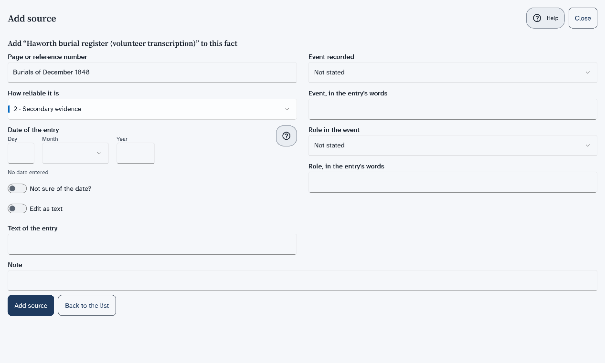
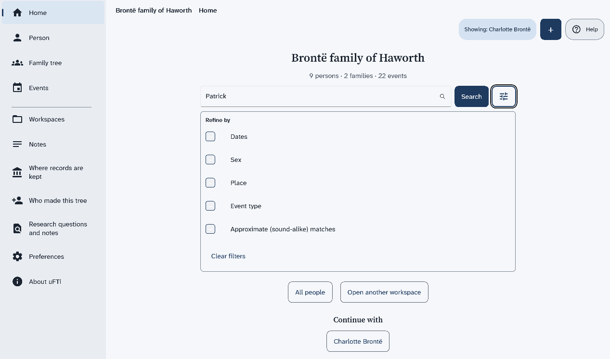
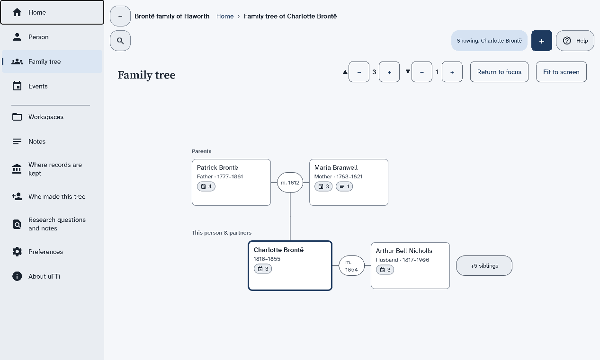
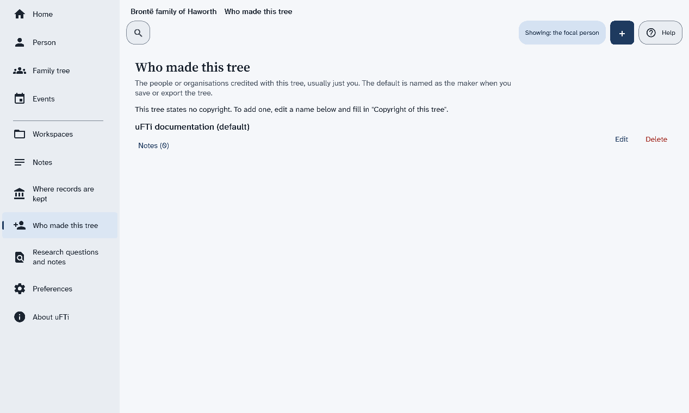
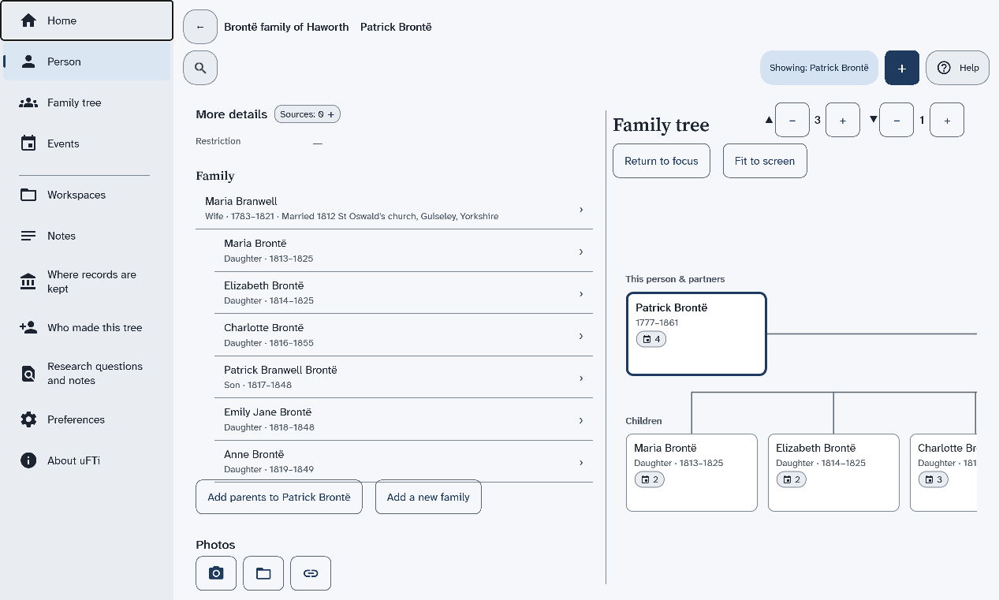

Quick Start
Six short pages that take you from opening uFTi to your first person, with its source and a copy.
This takes about ten minutes. Each page has a few steps. Do them in order.
Understanding family tree information
Oughtibridge Ltd
© 2026 Oughtibridge Ltd
This publication is available at https://docs.ufti.com/windows/Alpha-2/
Six short pages that take you from opening uFTi to your first person, with its source and a copy.
This takes about ten minutes. Each page has a few steps. Do them in order.
Open uFTi and find the main places: the menu at the left, the plus button, search and Help.
The first time you open uFTi, it opens a sample tree, the Brontë family of Haworth. Use it to look around.
You have seen the main places. Help is a button at the top right of every screen. The picture shows Home once a person has been opened. It then has Continue with and Recent people.

Next: Add your first person.
Make a tree of your own and add the first person to it.
That is your first person. uFTi saves your work as you go.

Next: Say where you found it.
Add a source to a fact, so you always know why you believe it.
Use a tree that already has a source in it. The sample tree has some: choose Workspaces in the menu, then Open on its card. On Home, search for a person who has a birth date, and choose their card.
The fact now has a source. Later, when two records disagree, this is how you will know what to believe.

Next: Keep it safe.
Save a copy of your tree as a file, and keep it somewhere else too.
Make a new copy after you add a lot. Keep one on another drive too.
Next: What next.
You have a tree, a person, a fact with its source and a copy, so choose where to go from here.
Well done. What do you want to do now?
The five ideas behind uFTi, in two minutes.
You can have more than one. Each shows as a card on the Workspaces screen. Make a new workspace for each tree.
Add a person for each relative. A family joins a couple. uFTi draws a tree from your families. Choose Family to see it.
A fact is something you record, such as a birth with its date. A source is where you found it. It can be a certificate, a census page, or what someone told you. A small chip beside each heading on a person's page counts the sources. Choose the chip to add one. Then you will always know why you believe a fact.
uFTi saves your work as you go. To keep a copy, choose Save as… on your workspace's card. Keep the file somewhere else too. Do it again after a big session.
Look in this guide when you are stuck. Use its search box, and type the words you would say. Practise in a workspace you make for the purpose.
Find people, add people and families, read their events and sources, and write notes.
This chapter is for everything you do once a tree is open. It starts with a picture of every screen. Then it shows how to find a person, how to read what the app knows about them, and how to add more. Each page has a few steps and a picture of the result.
The pictures use one small tree: the family of Patrick Brontë of Haworth, a village in Yorkshire. You can build it yourself, a little at a time, as you read.
What each item in the menu shows, what the top of every screen holds, and a picture of the main screens.
The pages of this chapter use the sample tree, the Brontë family of Haworth. To open it, choose Workspaces in the menu, then choose Open on the card of the sample. If you removed it, make the people in the pages by hand. Add another person shows how.
The menu stays at the left of every screen. Some items show your whole tree. Others show one person. That person is named in the chip that starts with Showing.
| Menu item | What it shows | Needs a person |
|---|---|---|
| Home | The name of your tree, how much it holds, and a search box. | No |
| Person | The page of one person, with their family tree beside it. | Yes |
| Family tree | A drawing of the person with parents, partners and children. | Yes |
| Events | The things that happened in that person's life. | Yes |
| Workspaces | Your family trees, one card for each. | No |
| Notes | Your own notes about that person. | Yes |
| Where records are kept | The archives, libraries and websites your sources come from. | No |
| Who made this tree | The people credited with the tree. | No |
| Research questions and notes | Your list of questions and ideas. | No |
| Preferences | The colours and the light or dark look. | No |
| About uFTi | The version of the app and facts about your computer. | No |
These stay in the same places as you move around.
Home shows the name of your tree and a line that counts its people, families and events. Under it are a search box, the Search button and a button with a small icon and no words. The icon opens a panel with the heading Refine by. Find a person shows how to search.
Two more buttons sit under the search box. All people lists everyone in the tree. Open another workspace goes to your list of trees.
After you have opened a person, Home has two more headings. Under Continue with is a button with the name of the person you opened last. Under Recent people is a button for each person you opened lately.
A tree with nobody in it shows Add the first person instead.
This is the list that All people opens. It has one card for each person. A card shows the name, the years of life and small chips. One chip counts the sources and one counts the events. Add person starts a new person: Add another person shows how.

Each card is one family tree. It tells you how many people, families and events the tree holds. The tree you have open has the Active mark. Open a family tree file and Remove a tree from the list start here.

This is one person's page. It has parts for Identity (the names and the sex), Birth, Death, More details, Family and Photos. Each part with facts has a chip that counts its sources.
A line above the names says how the person was added. The buttons Edit, Add a record, Copy and Delete person are at the foot of the page. When the window is wide enough, the family tree of the person shows beside the page. See a family tree explains the tree.
Find a person shows how to open a person. Change a person shows how to correct one.

See a family tree explains the tree. See the events of a person explains the list of events.
Notes are your own written words about a person, kept with their record. Add a note to a person shows how to write one.
These three pages list things that belong to the whole tree. You add to each with +.
Choose how the app looks explains the choices on this page.
This page shows the version of the app and facts about your computer. Find help and the version shows how to read the version.
Search your tree by a name, a place or an event, then open the person you want.
The search box is on Home. It searches the tree that is open.
Now Family tree, Events and Notes in the menu all show that person.
To see everyone, choose All people on Home. After you have opened someone, Home also has two headings. Under Continue with is a button with the name of the person you opened last. Under Recent people is a button for each person you opened lately.
To narrow the results, choose the button with a small icon and no words, next to Search. A panel with the heading Refine by opens. Select Dates, Sex, Place or Event type to add a filter. Select Approximate (sound-alike) matches to also find names that sound alike. Choose Clear filters to start again.

Next: See a family tree.
Draw the parents, partners and children of one person, and read the drawing.
Open a person first. Find a person shows how.
The same tree also shows beside a person's page, under a heading named Family tree. This task opens it on a page of its own, at full width.
In words, the picture shows this. Patrick Brontë is in the box with the dark edge. His wife, Maria Branwell, is beside him. The oval between them says m. 1812
. Their six children are in a row below, from Maria to Anne.
Beside the number buttons are Return to focus and Fit to screen. Return to focus takes the drawing back to the person in focus. Fit to screen fits the drawing to the screen. A big family may go past the edge of the screen.
You can also press the drawing itself. The app says what each press does. A person's box re-roots the chart
. The round mark between partners opens family events
. The box of the person in focus opens their record
.
The same tree is the pedigree in older manuals.
Next: See the events of a person.
List what happened in a person's life, such as birth, baptism and death, and open any one.
Open a person first. Find a person shows how.
The list is in order of date. Branwell's birth in 1817 comes before his baptism on 23 July 1817.
To add an event, choose Add event under the list. Add an event to a person shows how.
How uFTi records a date, from one you know in full to one you only know in part.
Most dates are simple. Type the day, the month and the year, such as 15 March 1900. You can write the month in words or choose it from the list.
A line under the date starts with Reads as
. It shows how uFTi has understood the date. Look at it each time. If it is not what you meant, change the date.
The date editor asks How much do you know?. Choose The year, The month and year or The whole date, to match what the record gives you.
Do not make up a day or a month to fill the gap. A newspaper may say that a book came out in December 1847. Then choose the month and the year, and stop there.
Choose Not sure of the date? to say how sure you are. You can say that a date is about right, worked out by you, or a limit. You can also give a span of time. The kinds of date lists each choice, with an example.
Choose Edit as text to type the whole date in one box, such as about 1900 or between 1850 and 1860. Some things you might type are kept as typed and not read as a date. Typing a date says which.
A date from long ago may need more care. Britain changed its calendar in 1752. Before that, the year there began in March. uFTi can keep a date in the calendar of the record.
For example, the diarist Abraham De la Pryme gives his birthday as 15 January 1671. England used the Julian calendar then. To keep the date in that calendar, type Julian 15 January 1671. The Reads as
line then shows 15 January 1671 (Julian)
.
Calendars and old dates explains how this works. A worked case: a birth in January and A worked case: two calendars in one life follow his dates through real cases.
uFTi uses dates to order the events of a person. Dates in lists and in order shows where you can enter a date, how dates are shown and how uncertain dates are ordered.
Seven ways to say how sure you are of a date, each with an example.
A date in a family tree is often not exact. The kind of date lets the tree say so. Choose Not sure of the date? to see the kinds under Kind of date. Pick the one that matches your evidence, not the one that sounds neatest.
| Kind | Use it when | Example | Type it as |
|---|---|---|---|
| On | You know the date. | A copy of a parish register says that Emily Brontë was buried on 22 December 1848. | 22 December 1848 |
| About | A record or a story gives a date that is close, but not exact. | A family story says that a great-uncle left home about 1850. | about 1850 |
| Estimated | You worked the date out yourself, for example from an age. | A census says that a woman was 30 in 1851. You work out that she was born about 1821. | estimated 1821 |
| Before | It happened on or before this date. | Branwell Brontë had drawing lessons before 1835. | before 1835 |
| After | It happened on or after this date. | Branwell worked as a portrait painter after his visit to London in 1835. | after 1835 |
| Between two dates | You know the earliest and the latest date it could have been. | A memorial tablet says that Maria Brontë died on 6 May 1825, in the 12th year of her age. So she was born between 7 May 1813 and 6 May 1814. | between 7 May 1813 and 6 May 1814 |
| From a date to a date | Something went on for a while, such as a job or a stay. | Patrick Brontë was curate of Thornton from 1815 to 1820. | from 1815 to 1820 |
Use Before and After for a limit that a record gives you. A baptism can be a limit on a birth, because a child is baptised after being born. Use Estimated only for a date that you worked out.
Do not pick one date and drop the other. Record each date with the source that gives it. Then your tree shows the disagreement, and a later record may settle it.
What uFTi reads when you type a date in one box, and what it keeps exactly as you typed it.
Choose Edit as text to type a whole date. Write it in words, with the day first, then the month, then the year. The box shows an example. Capital letters do not matter. You can write a month in full or with its first three letters.
| You type | It means |
|---|---|
| 15 March 1900 or 15 Mar 1900 | A whole date. |
| March 1900 | A month and a year. |
| 1900 | A year. |
| about 1900, estimated 1900 or calculated 1900 | A date that is close, or that you worked out. |
| before 1900 or after 1900 | A limit. |
| between 1850 and 1860 | The earliest and the latest date it could be. |
| from 1850 to 1860 | Something that lasted for a while. |
| 44 BC | A year before the common era. BCE works too. |
| Julian 14 February 1750 | A date in the Julian calendar. Name the calendar first. |
| 12 February 1731/32 | A date with a dual year (Calendars and old dates). |
| 1700 (Easter) | The year 1700, with the word Easter kept beside it. |
These are not read as dates. uFTi keeps them exactly as you typed them. It does not use them to order your events.
When uFTi cannot read a date, it does not stop you, and it does not warn you. The line under the box only repeats what you typed, such as Reads as Easter 1700
. So read that line each time. For a date that uFTi has understood, the line shows it in words, such as Reads as 15 March 1900
.
A date that cannot be read stays in the box as text. Edit as text stays on for it, because the day, month and year pickers cannot show it.
The four calendars uFTi keeps, and what you need to know when a record is from before 1752.
For a date in the last two hundred years or so, you can ignore this page. Every date is in the calendar that you use today, and uFTi assumes it. This page is for a researcher who meets an older date.
uFTi keeps a date in Gregorian, Julian, Hebrew or French Republican. Gregorian is the one you use today, and it is the default. You choose another under Calendar in the date editor. Or you type its name before the date, such as Julian 14 February 1750.
Then uFTi names the calendar in the date, as in 14 February 1750 (Julian)
. Some forms fix the calendar. A census form always uses Gregorian, and does not offer the list.
uFTi does not change a date from one calendar to another. It keeps the date as you entered it. Dates are ordered by the year in their own calendar.
Britain and its colonies used the Julian calendar until September 1752. In that month, Wednesday 2 September was followed by Thursday 14 September. Many Catholic countries had changed in 1582, and other countries changed at other times. So the place matters as well as the year.
uFTi does not know about the change. It takes 3 September 1752 as an ordinary date, and does not warn you, though that day never happened in Britain. Check dates of this time yourself.
The two calendars differed by ten days in the 1600s and by eleven days in the 1700s. A record from the time gives the day as it was then. Naming the calendar tells the next reader which kind of date it is.
It was really two changes. The year 1751 began on 25 March and ended on 31 December. Then eleven days were left out in September 1752. A record made near these changes can look wrong, by days or a year, when it is right.
This part is about England, Wales and Ireland, and the British colonies. Before 1752, the year there began on 25 March, not on 1 January. A day in February was still in the old year. Writers marked this with a dual year, such as 1731/32. It means 1731 by the old rule and 1732 by ours.
Scotland began its year on 1 January from 1600. Other countries changed the start of the year at other times. A dual year belongs to a British record from 1 January to 24 March, up to 1751. Check the place of your record.
Type a dual year, such as 12 February 1731/32. uFTi shows the date as you wrote it. The date pickers cannot hold a dual year, so it is always typed. uFTi orders it by the first year, 1731. A worked case: a birth in January shows why this matters.
Hebrew dates appear in Jewish records. France used the French Republican calendar from 1793 until the end of 1805. For these two calendars, uFTi checks only that the day is possible. It does not work out the other calendar for you.
How a year that began in March can change a birth year, shown with a diarist born in 1671.
This case shows why the old year matters. Read Calendars and old dates first.
Abraham De la Pryme was a diarist in Yorkshire. In his diary, he says he was born on 15 January 1671. His own list of the family, at the front of the diary, says the same.
The same list says that his parents married on 3 April 1670. It also says that his brother Peter was born on 29 April 1672. The printed edition of 1870 is the source for all of this.
In England at that time, the year began on 25 March. If Abraham used that rule, then January 1671 was January 1672 by our count. Then Peter would have been born about three months later. That cannot be right.
So Abraham probably began his year on 1 January. His parents' wedding fits too: a birth in January 1671 comes about nine months after April 1670. His birth year is then 1671 in either count.
In England, a writer who gave a date from January to March might use either year. Someone adding one to a January year, because of the old rule, would get 1672. The family's own dates suggest that this would be wrong here.
The same early months appear in two ways in the edition. The preface says that Abraham took his degree in January 1693. A footnote prints the year of another man's degree, at the same college, as 1692-3. The two forms name one year.
His own letters, as printed, show the other way. One is dated 2 February 1701-2, and another 25 January 1703-4. Each date comes before 25 March, so each year has two numbers. The same person can write a year differently in different records. Check each one.
How far apart the Julian and Gregorian calendars were in the life of a diarist who lived from 1671 to 1704.
Abraham De la Pryme was a diarist in Yorkshire. England used the Julian calendar all through his life, so his dates are Julian. This case shows how far they were from the Gregorian calendar. Read Calendars and old dates first.
The Gregorian calendar was ten days ahead when Abraham was born. The gap grew while he lived. The year 1700 had a 29 February in the Julian calendar, but not in the Gregorian calendar. So, from March 1700, the gap was eleven days.
| What happened | Julian, as written then | Gregorian | The gap |
|---|---|---|---|
| His birth | 15 January 1671 | 25 January 1671 | 10 days |
| A letter from Hull | 20 November 1699 | 30 November 1699 | 10 days |
| Another letter from Hull | 18 September 1700 | 29 September 1700 | 11 days |
| His death | 12 June 1704 | 23 June 1704 | 11 days |
uFTi does not work out the other calendar for you. We worked out this table by hand.
A friend wrote in his own diary that Abraham died on a Monday, the 12th of the month. The preface of the printed diary gives this, for June 1704. In the Julian calendar, 12 June 1704 was a Monday. In the Gregorian calendar, it was a Thursday. So the friend's date is a Julian one.
When a record names the day of the week, you can test its date in this way.
Abraham died in 1704, so his dates stop before the change of 1752. Calendars and old dates explains that change.
Keep the date as the record gives it. If you want to show which calendar it is, type its name first, such as Julian 12 June 1704.
Where you can enter a date, how uFTi shows it, how it puts dates in order and what it checks.
A source has no date of its own. Give the date of a record to the event it is about.
A date is written in words, in the language of the app. It does not follow the date settings of your device. You will see 15 March 1900
, March 1900
and 1900
. An uncertain date reads about 1900
, before 1900
, after 1900
, between 1850 and 1860
or from 1850 to 1860
. A year before the common era reads 44 BC
. A life span in a list reads 1816–1855
.
uFTi orders by the year of the first date, as if that date were exact. It does not use the month or the day for an uncertain date.
| Date | It is ordered as |
|---|---|
| about 1850 | The year 1850. |
| before 1900 and after 1900 | The year 1900, both. Neither goes before or after it. |
| between 1850 and 1860 | The year 1850. |
| from 1850 to 1860 | Its start, 1850. |
| A year before the common era | Before the year 1. |
| A date kept as typed | It is not ordered by year, because uFTi reads no year in it. |
On the page of a person, the events are in order of year, and then by the kind of event. The month and the day are not used. Events with no date come last. The family tree view uses the year, then the month, then the day, of the first date.
While you enter a date, uFTi checks that the day exists in that month and year of the calendar. It does not check that the events of one person are in a sensible order. Check yourself that a baptism comes after a birth, and a burial after a death.
Some forms warn you about a date but never stop you. A census form expects a Gregorian date on the day of the census.
uFTi has no limit on the earliest year. Type BC or BCE after the year, such as 44 BC. The date pickers cannot enter these years, so you always type them.
How uFTi records a place, and how it helps you spell a place the same way each time.
In uFTi, a place is the words you type. There is no map, and no list of places to pick from. So type the place as your record gives it, such as a town or a parish.
You meet a place box in these forms:
They all work in the same way.
An empty box says Start typing a place…
. As you type, uFTi shows the places in this tree that match. It shows up to eight, underneath the box. Choose one to use it. Or keep typing a new place.
The places offered are the ones you have already typed in this tree. When you choose one, the place is spelled exactly as before. That keeps one place from turning into two.
When a record spells a place in a different way, type it as the record does. Then the tree shows what the record said.
What uFTi does when you save a person whose name is already in the tree, and how to choose.
A person has Given name(s) and Surname. Families use the same names again and again. So two people in your tree may share a name, and a name you type may belong to someone you have already added.
When you save a form that would make a person with a name that is already in the tree, uFTi stops and asks you first. A box opens. Its title says that the name is already in this tree. If more than one person has the name, it says how many.
Under the title, there is one button for each person who has that name.
If you are not sure, look at the other person first. Do not join two people unless your records say they are one.
See which books and records are listed for a birth, a death or another fact, and add one.
Open the page of Emily Brontë first. Find a person shows how.
Each fact on a person's page has a small chip that counts its sources. This page adds a source to the death of Emily Brontë.
The sheet that the chip opens lists the sources that are already in the tree. The sample tree has some. If your tree has none, the list is empty until you add a source, as Add a source to a person shows.
Each source on the sheet shows its title. Under it is the page or reference you gave. A source that has an author, or a quality, can show those too, such as Quality: 2 · Secondary evidence. What a line shows depends on what you have entered for that source.
Each source on the sheet has four buttons, named Copy, Citation, Edit and Remove. The sheet also has a button named Compare records that disagree.
To add a source to a person, see Add a source to a person. Next: Add a research note.
Add a person to a tree that already has someone in it.
The first person comes with a new tree. After that, you add people with +. This page adds Charlotte Brontë. The sample tree already has her, so follow the steps in a tree of your own, such as the practice tree from the Quick Start.
To check, choose Home, then All people. The new person has a card with the name and the years of life.
There is a shorter way to the same form. On Home, choose All people, then choose Add person.
The sheet ends with a button that starts More forms and has a count in brackets. It shows the other forms, such as the census forms from 1871 to 1921. Choose Fewer forms to hide them again.
Next: Add a family with children.
Correct a name, a date or a place on a person's page.
Open the person first. Find a person shows how.
Your changes are saved to the file as you go.
Remove a person from your tree, for example one you added by mistake.
Open the person first. Find a person shows how.
Use this only for a person who should not be in the tree, such as someone you added twice. To fix a wrong name, date or place, use Change a person instead.
The app says that removing a person cannot be undone. It also takes them out of their families and events.
Next: Add another person.
Join two partners who are already in the tree, and add their children.
The partners and the children must already be in the tree, each with a page of their own. Add another person shows how to add a person.
This page makes a family from people who are already in the tree. It uses Patrick Brontë, Maria Branwell and their six children. You add the marriage afterwards, on the page of the family. The sample tree already has this family, so use this page for people you added yourself.
Choose View family tree to see the family drawn out.
Next: See a family's page.
Make a family for a person who is already in the tree, such as a daughter who marries.
Add both partners to the tree first. Add another person shows how.
Charlotte Brontë is already in the tree, as a child in her parents' family. In 1854 she married Arthur Bell Nicholls. This page makes that second family. Charlotte then shows in both: as a child, and as a partner. The sample tree already has this family, so use this page for people you added yourself.
Once you add the marriage, the Family tree of Charlotte shows her husband beside her, with m. 1854
between them.

Next: See a family's page shows how to add the marriage.
Read the page of a family, and add the marriage to it.
Make the family first. Add a family with children shows how. Its page opens when you save it.
This page uses the family of Patrick Brontë and Maria Branwell.
The marriage shows in Marriage on the page of the family. The tree of each partner shows the year, such as m. 1812
.
The chip beside Marriage counts its sources. Look at the sources of a fact shows how to add one.
No events recorded for this family., add the marriage with Edit, in the steps of this page.
The foot of the page also has the buttons Copy and Delete family. Next: Add a later family.
Write down something you know about a person that does not fit in a date or a place.
Open the page of Maria Branwell first. Find a person shows how.
A note is your own writing, kept with the person's record. This page adds a note to Maria Branwell.
The note belongs to that person. On a record, a button that starts with Notes and a number in brackets, such as Notes (1), counts its notes.
The same page has the buttons Add note and Use an existing note. To use one note for several people, see Use one note for several people.
Pick a colour theme, and a light or dark look, for this computer.
These settings are for this computer only. They do not change your family tree files.
The pages change to the look you chose, and they stay that way.
The page has a third group, named Saving another program's file, with two switches. It is about what a save writes beside a file that another program made. Opened files and copies says more.
Find the Help button on a screen, and read which version of the app you have.
Help is a button at the top right of every screen. Its full name is Help about this screen
. The sheet named Add a record has one too.
Many boxes on a form also have a small round button with a question mark. Its full name is Help about this field
.
The version is the number of your copy of uFTi. Give it when you ask someone about a problem, so they know which copy you have.
You have the version to quote.
Next: The screens of the app shows what every other menu item does.
What to do when Person, Family tree or Events have nobody to show.
You choose Person, Family tree, Events or Notes. No person is open. The chip at the top starts with Showing, and it reads Showing: the focal person
instead of a name.
These pages show one person at a time. You have not opened anyone yet.
The tree has nobody in it yet. On Home the line under its name says 0 persons · 0 families · 0 events
, and the chip says Showing: the focal person
.
Add your first person shows how to add the person.
Record what happened in a life, write down what you know, and say where you found it.
A tree is more than names and dates. This chapter is for the parts that make it trustworthy. You add events, such as a baptism or a home that lasted for years. You write notes. You record where each fact came from, and what you still want to find out.
Each page has a few steps. The examples are the Brontë family of Haworth, and they use the sample tree of that name. To follow them, choose Open on its card on Workspaces. Move between workspaces shows how. If you removed the sample tree, or you work in a tree of your own, use your own people in place of ours. Add another person shows how to add a person.
Two ideas run through the chapter. Say where you found a thing, and say what you saw. A copy that someone typed out is not the register itself, so say that it is a copy.
Record something that happened in a person's life, such as a baptism, with its date and place.
Open the page of Branwell Brontë first. Find a person shows how.
An event is something that happened in a person's life. This page adds the baptism of Branwell Brontë, on 23 July 1817 at Thornton.
The event is part of the person's life. The list shows events in date order, so a birth known only as 1817 comes before a baptism on 23 July 1817.
To say where a date came from, see Say where you found it. Next: Enter a period.
Record something that lasted for years, such as a home, by typing both dates in one box.
Open the page of Patrick Brontë first. Find a person shows how.
Some things last for years, such as living in one house. You can type the dates as text. This page adds the time that Patrick Brontë lived at Haworth, from 25 February 1820 to 7 June 1861.
The date now reads as a period, from one date to another.
For every kind of date, see The kinds of date. Next: Add an event of your own kind.
Record something that has no word in the list of events, such as the publication of a book, by naming the kind yourself.
Open the page of Charlotte Brontë first. Find a person shows how.
The Type list has a word for many kinds of event. It has no choice named Event
. The last choice is Fact, a general word. When the list has no word for your kind, choose Fact and name the kind yourself in the box Kind of event, in words. This page adds the publication of Poems by Currer, Ellis, and Acton Bell in May 1846 to the page of Charlotte Brontë.
You have recorded an event of your own kind, with the kind named in your own words.
Next: Add a note to a person.
Write a note once, then use the same note on the page of another person.
The tree needs a note already. Add a note to a person adds one to Maria Branwell. Then open the page of Patrick Brontë. Find a person shows how.
Some facts belong to more than one person. The note about Maria Branwell tells of her marriage to Patrick Brontë, so it fits his page too. You can use the same note on both pages, so you do not write it twice.
Patrick Brontë and Maria Branwell now use the same note. Both of their pages show it, with the words Shared with 1 other record under its first words.
To write a first note, see Add a note to a person.
Record an archive, a library or a museum that keeps the records you use, so a source can point to it.
A repository is a place that keeps records: an archive, a library, a website or a family collection. A source can point to the place that holds it. This page adds the Brontë Parsonage Museum.
The place is in the list. Add the others the same way, such as The National Archives at Kew.
Next: Add a source to a person.
Describe a book, a register or a web page you used, so that someone else could find it again.
Open the page of Emily Brontë first. Find a person shows how.
A source is where you found something out. This page adds a source to Emily Brontë: a copy of the Haworth burial register that volunteers typed out.
The source is now in your tree. It is attached to the whole record of the person, so every part of the person's page that has a chip now counts one source.
To say which fact a source backs, add it to that fact instead. Look at the sources of a fact shows how. Next: Add a research note.
Write down a question you are trying to answer, with a status, and tie it to the people it is about.
A research note is a question, an idea or a job to do. It has a status, such as open, in progress or resolved. This page adds the question of Patrick Brontë's surname.
The page Research questions and notes lists the note by its first words. Under them it says Open · linked from 1 record(s).

The question is in your research log, tied to Patrick. Each note in the list has Edit, Copy and Delete.
Write down where you looked and what came back, so that you, or someone else, never has to look there again.
Write the search in a research note. This page records a search for the death of Charlotte Brontë in 1855, which found nothing under her own surname.
Your note says where you looked, under what name, and what came back. A later reader can see the search and does not have to repeat it.
Next: Use a form for a real record.
Choose the form that matches a record you have, such as the 1841 census, and see what it fills in for you.
Open the page of Patrick Brontë first. Find a person shows how.
Some records have a form of their own, with the boxes that the record has. The form for a census already knows the date of the census. This page opens the form for the 1841 census.
You have chosen the form that matches the record. The form shows Census as its event type, the date in Census date, and a Place box that must be filled in.
Next: What next.
What your workspace holds, why a GEDZIP file is the one to keep and send, and when a plain family tree file is better.
Your tree is more than one file. It is the family tree, its research notes, and the pictures and other files you attach. This chapter says what uFTi does with a file you open, how to keep a copy safe, and which file to send.
The short answer is the GEDZIP file. It holds your whole workspace in one file. Keep your work in a GEDZIP file, and send a GEDZIP file to anyone who also uses uFTi.
A plain family tree file is for older programs only. It leaves out your pictures and other attached files.
Your tree may have started in another program. Your family may want a copy. This chapter is for both.
Start a new, empty family tree and give it a name.
A workspace is one family tree and everything kept with it. You can have more than one. Make a new one for each tree you start.
You have an empty tree with a name of your own. uFTi saves your changes as you go.
If you want to use the name of a tree you removed, remove that tree first. Close uFTi, open it again, and only then create the new tree. Remove a tree from the list says more, and says what to do about a tree called default.
Next: Say who made this tree, or Add your first person.
Add your name, or the name of a group, as the maker of your tree.
The page Who made this tree lists the people or groups credited with the tree. It is usually only you. The name marked (default)
is named as the maker when you save the tree.
The page now lists your name, with (default)
after it. Beside it are a button for notes, and the buttons Edit and Delete.
Until you fill in Copyright of this tree, the page says This tree states no copyright.
To add one later, choose Edit beside a name and fill in that box.
The picture shows the page with one name listed, uFTi documentation (default)
, and that line about copyright.

Next: Move between workspaces.
Open another of your trees, and see which one is open now.
You can keep more than one tree. Each one is a workspace, and each has a card on Workspaces. The card of the open tree is marked Active. The sample tree, Brontë family of Haworth, has a card too. Choose Open on it to go back to the family that the examples in this guide use. If you removed the sample tree, make the people of the examples yourself, as Add another person shows.
The page says that each workspace is one family tree file, and that your changes are saved to the file as you go. Each tree has a card.
Everything you see now is from the tree you chose.
Choose Show details on a card to see the name of the file of that tree. The card also shows a line that starts uFTi and a version number. The button then reads Hide details.
Next: Where your trees are saved.
A workspace is your family tree and its linked files, and a GEDZIP file holds all of them in one file.
A workspace is one family tree and everything kept with it. That is the family tree file, with its research notes, and the pictures and other files you attach to people, facts and sources.
The family tree file does not hold your pictures. It links to them, and the pictures stay in files of their own. The same is true of other attached files.
So if you send only the family tree file, the other person gets the tree and its links, but not the pictures.
A GEDZIP file puts the family tree file and all the files linked to it into one file. You send one file, and nothing is left behind. Another person who uses uFTi opens it and sees your whole workspace.
For that reason, a GEDZIP file is the one to keep and the one to share between copies of uFTi.
A plain family tree file holds the people, families, facts, sources and research notes. It does not hold the pictures or other attached files.
When you save one, uFTi asks which version of GEDCOM to use. Choose GEDCOM 7, which was published in 2021 and is the one it recommends. Choose GEDCOM 5.5.1, which was published in 1999, only for an older program that cannot read GEDCOM 7.
A GEDZIP file holds a GEDCOM 7 family tree file, with the pictures and other attached files beside it.
| File | The tree and its research notes | Pictures and other attached files | Use it to |
|---|---|---|---|
| GEDZIP file | Yes | Yes | Keep your work, and share it with another copy of uFTi. |
| Plain family tree file | Yes | No | Share with another program that reads GEDCOM, or work with one. |
New trees are saved in a folder named uFTi inside your Documents folder, and they stay there if you remove the app.
Each workspace is one family tree file. uFTi saves your changes to that file as you go. When you make a new tree, uFTi saves it in the folder Documents\uFTi on your PC.
Choose Show details on the card of a tree on Workspaces. It shows the name of the file of that tree.
The pictures that you add to a tree are saved in the folder Documents\uFTi\Media, beside your trees. They are kept in the same way.
The file stays in its folder. Remove a tree from the list says how to take a tree off the list, and how to open it again.
Your trees are files in your own Documents folder. They are not part of the app. If you remove uFTi from your PC, your trees stay where they are.
Some PCs keep the Documents folder in OneDrive. If yours does, your trees go to OneDrive with the rest of that folder.
A tree that you open from another folder stays in that folder. Opened files and copies says what happens to it.
On Windows, uFTi works on the file you open, so make a copy first if you want the original left alone.
Each workspace is one family tree file. When you open a family tree file, uFTi saves your changes to that file as you go.
The file you open changes as you work. If you want the original left alone, work on a copy. Make the copy before you change anything. Then open the copy, and keep the original safe.
Choose Save as… on the card for your tree. A sheet named Save workspace as asks which kind of file to make. Choose Everything (.gdz, recommended), unless you need a plain family tree file for another program. Then Windows asks where to put the file.
A copy made this way is a saved copy. It is a file of its own, and it stays as it was when you made it. To work on the copy, open it.
Send a copy that you saved with Everything (.gdz, recommended), and not one of the other files. Which file to send says why.
Bring a tree from another program, or a copy from a relative, into uFTi.
A family tree file ends in .ged or .gdz. Read Opened files and copies first if the file is the only copy you have.
If you have no tree at all, the page Workspaces says No workspaces found. Open a family tree file to get started.
This is the way to do that.
The tree is added to the list, with a card of its own on Workspaces. To make it the open tree, choose Open on its card. Move between workspaces says more.
Next: Keep it safe.
Take a tree off the Workspaces page without deleting its file.
The card is gone. The file is still in its folder. Open it again with Add from file… at any time.
If that was your only tree, the top of the window says No workspace open
. The page Workspaces says No workspaces found. Open a family tree file to get started.
The buttons Create workspace and Add from file… are still there.
To start clean with that name, do these things in this order:
If you open uFTi with no tree, it may make an empty tree called default
. It holds nobody. You can remove it in the same way.
Send a GEDZIP file to anyone who uses uFTi, and a plain family tree file only to an older program.
To share your tree with someone who uses uFTi, save a copy as a GEDZIP file, and send that file. Keep it safe shows how to make one.
A GEDZIP file holds your whole workspace: the tree, its research notes, and the pictures and other attached files. It is one file, so you can attach it to an email or put it in a shared folder. Nothing is left behind, so the other person sees what you see. Your workspace and its files says more.
Some older programs cannot read a GEDZIP file. For them, save a plain family tree file instead. It holds the people, families, facts, sources and research notes, but not the pictures or other attached files. If the other person needs the pictures, send them as well.
Do not send the files that uFTi keeps beside your tree. The backup is an old version of your tree. Sending it sends an old tree. Files beside your tree says what each file is.
A saved copy stays as it was when you made it. Make a new one before you send, if you have added anything since.
The files you may see beside your tree: the tree itself and its backup.
When you open a family tree file, you may see more files beside it. uFTi makes the extra files for you. You do not need to open them or change them.
| File | What it is | Send it to family? |
|---|---|---|
| Your tree, such as Brontë family.ged | The file you opened. uFTi saves your changes to it. | Send a GEDZIP copy instead. |
| The backup. Its name is the name of your tree, with the word backup, the date and the time added in brackets. | An older copy of your tree. uFTi makes one the first time it saves after you start the app. | No. It is an old version. |
You may see more than one backup, because uFTi makes a new one each time you start the app and save. A backup is a family tree file too, so you can open one if you need your older tree.
A GEDZIP file, which ends in .gdz, holds the whole workspace in one file. It is the file to keep and to send. If you open a GEDZIP file, uFTi works on that file, and its backup is a GEDZIP file too.
Your tree may also link to pictures and other files. They are separate files, and a GEDZIP file holds them with the tree. Your workspace and its files says more.
To make the copy that you send, choose Save as… on the card for your tree. Which file to send says more.
Choose a photo or a scan from your PC for a person's page.
Open the page of the person. Find a person says how.
You have chosen a photo or a scan for the person. Look at the part named Photos on the page.
The button with a camera on it is the button for taking a photo. Where your trees are saved says where uFTi keeps your pictures.
Next: Which file to send.
What the buttons in the Photos part of a person's page are for.
A person's page has a part named Photos. In a tree with no pictures, it has three buttons in a row. Each has a small picture on it and no words. The picture shows them at the foot of a page, under Photos.

The third button opens a window named Link existing media. It has a box named Search media by description and a button named Close. When the tree has no pictures, the window says No media in this workspace yet.
Choose Close to shut it.
Once a person has pictures, a fourth button shows, for saving them.
Which file to send says which file to send to family, and whether the pictures go with it.
An older copy of your family tree file, which the app makes for you. It is made the first time the app saves after you start it.
A year written with two numbers, such as 1731/32. In Britain, it marks a date from 1 January to 24 March, up to 1751.
Something you record about a person, such as a birth with its date and place.
A GEDCOM file that holds a whole family tree, with its people, families, facts, sources and research notes. It does not hold pictures or other attached files. You can open one, save one and send one.
The standard format for family tree files. Many family tree programs read it. GEDCOM 5.5.1 was published in 1999. It has been the common format for more than twenty years. GEDCOM 7, published in 2021, is the newer version. A version belongs to the standard, not to uFTi.
One file that holds a whole workspace. It has the family tree with its research notes, and the pictures and other files. It is the best way to save and send your work.
The calendar that you use today. Britain changed to it in September 1752.
An old way to count the days. Britain used it until 1752.
A family tree drawn for one person. It shows their parents above them, and their partners and children.
A copy of your tree that you save yourself, as a GEDZIP file (preferred) or a family tree file. It stays as it was when you made it.
Where you found a fact. It can be a certificate, a census page, a book, or what someone told you.
One family tree and everything kept with it. That is the family tree file with its research notes, and the pictures and other files you attach. A GEDZIP file holds all of it. You can have more than one.